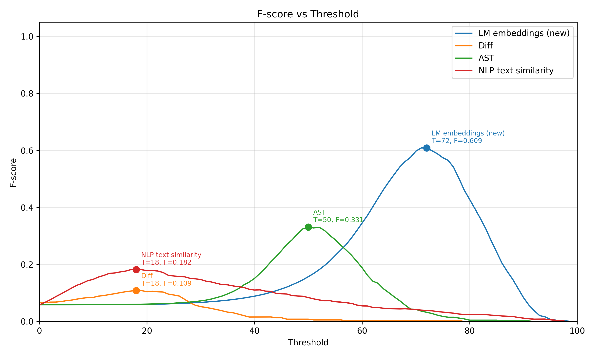
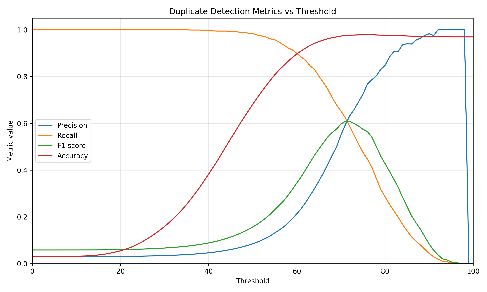
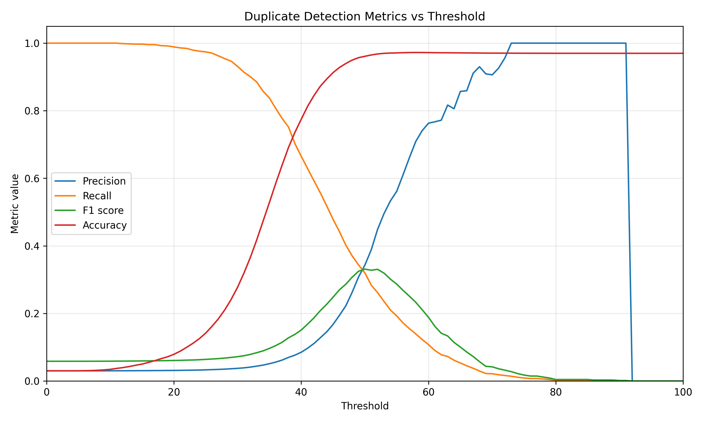
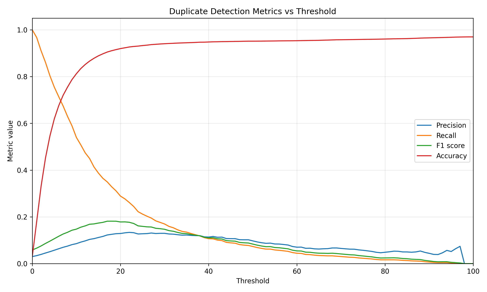
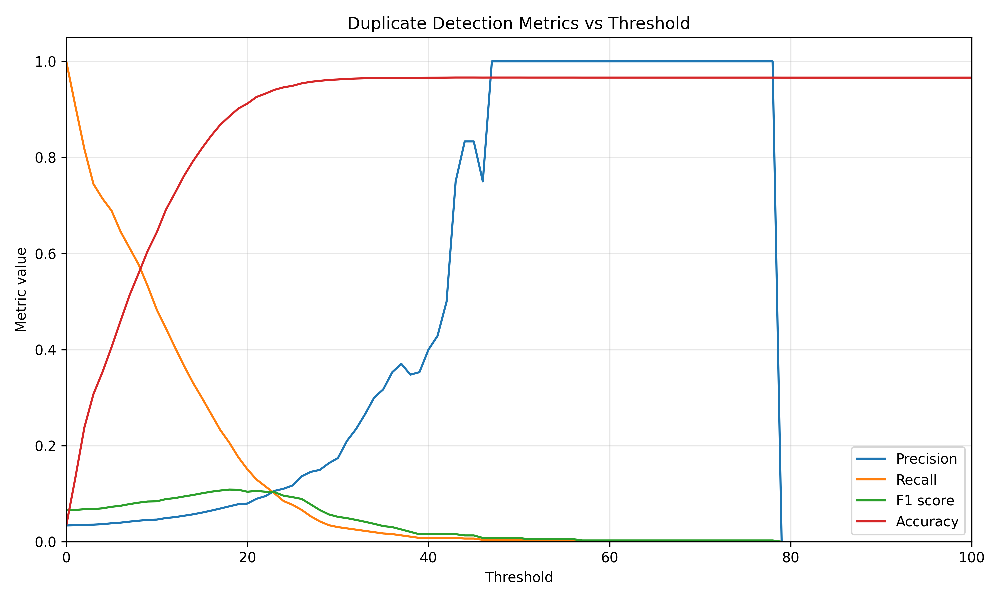

Summary
In the previous posts, we described the process of building ArKanjo, fixing a small installation issue, and planning a new duplicate detection method based on language-model embeddings. In this final report, we describe the implementation of that method in the ArKanjo codebase and compare it with the methods that were already available in the tool.
The new method computes embeddings for pieces of source code using a pretrained code model and then compares pairs of files with cosine similarity. We continue using
jinaai/jina-embeddings-v2-base-code
as the default model because it is small enough to run in our experimental setup while still being specialized for code. However, the implementation does not hard-code this choice: model name, batch size, maximum sequence length, and threshold-related options are exposed as configuration parameters so users can adapt the method to their own hardware and use cases.
TODO: add the final pull request link, branch name, or commit hash here.
Implementing the embedding method
The main implementation step was to connect the embedding pipeline to ArKanjo's duplicate detection workflow. Given a collection of source files, the method reads each file, sends the code to a transformer encoder, obtains one vector representation per file, and compares all candidate pairs using cosine similarity. A pair is then classified as duplicate when its similarity is above a chosen threshold.
During implementation, two practical issues were especially important. First, the batch size has a direct impact on memory usage. Larger batches are faster, but they can cause out-of-memory errors depending on the available GPU or CPU memory. Second, the maximum sequence length also affects memory consumption, because long source files produce longer token sequences. For this reason, both batch_size and MAX_SEQ_LENGTH are configurable instead of fixed inside the code.
We also kept the model choice configurable. Although jinaai/jina-embeddings-v2-base-code was the model used in these experiments, users may want to try larger models, newer code embedding models, or local models better suited to their programming language. Exposing these options makes the contribution more flexible and avoids tying ArKanjo to a single embedding backend.
File-level granularity
To run this evaluation, we also implemented a new granularity mode. Previously, the codebase focused on comparing functions extracted from files. For the POJ-104 experiment, however, each example is a complete competitive programming solution. Therefore, we added support for comparing files directly against files, without first splitting them into functions.
This mode is useful for datasets where each file corresponds to one complete solution or program. In this setting, the duplicate detection problem becomes: given two source files, decide whether they solve the same problem.
Evaluation dataset
For the comparison, we used the POJ-104 dataset, a commonly used benchmark for code clone detection. In the CodeXGLUE formulation, each program has a label corresponding to the problem it solves, and the goal is to retrieve or identify code with the same semantics.
Our evaluation is a smaller threshold-based experiment rather than the full CodeXGLUE retrieval benchmark. We randomly sampled 30 problems and 10 examples from each problem, resulting in 300 code files. We then considered two files to be clones when they solve the same problem. This gives a simple binary duplicate detection setup: pairs from the same problem are positive examples, while pairs from different problems are negative examples.
TODO: add the random seed and exact preprocessing command here, if you want the experiment to be fully reproducible.
Compared methods
We compared the new embedding-based method with three previously implemented ArKanjo methods:
Diff. This method compares source files using textual differences. It is useful for detecting near-identical code or code with small edits, but it is expected to struggle when two solutions implement the same algorithm with different structure, naming, or formatting.
NLP text similarity. This method treats code mostly as text and compares textual representations of the files. It can capture more similarity than a strict diff in some cases, but it is still strongly affected by surface-level lexical overlap.
AST. This method uses the abstract syntax tree representation of the code. Since the AST captures syntactic structure, it can be more robust than raw text comparison when formatting and names change. However, it is still mainly a structural method, not a semantic model of program behavior.
LM embeddings. This is the new method implemented in this contribution. It uses a pretrained code embedding model to map each file to a vector, then compares vectors with cosine similarity. The goal is to capture semantic similarity beyond exact textual or syntactic overlap.
Results
The figure below summarizes the F-score curves for all four methods. The best threshold for each method is highlighted directly on the plot.

The embedding-based method achieved the best F-score among the evaluated methods. Its best result was an F-score of 0.609 at threshold 72. The AST method was the strongest non-embedding baseline, reaching an F-score of 0.331 at threshold 50. The NLP text similarity and Diff methods performed worse, with best F-scores of 0.182 and 0.109, respectively, both around threshold 18.
| Method | Best threshold | Best F-score |
|---|---|---|
| LM embeddings (new) | 72 | 0.609 |
| AST | 50 | 0.331 |
| NLP text similarity | 18 | 0.182 |
| Diff | 18 | 0.109 |
Looking at the individual precision, recall, F-score, and accuracy curves also helps explain the behavior of each method. The embedding method reaches a much better balance between precision and recall than the other approaches. Its F-score peaks when precision has already increased substantially while recall is still reasonably high.

The AST method also shows a meaningful precision-recall trade-off, but its peak F-score is lower. This suggests that syntactic structure is informative for this dataset, but not enough to fully capture the fact that independently written solutions can solve the same programming problem in different ways.

The text-based baselines perform worse. The NLP text similarity method obtains high accuracy at high thresholds, but this is partly because the dataset is highly imbalanced at the pair level: there are many more non-clone pairs than clone pairs. Therefore, accuracy alone is not a reliable metric here. F-score is more informative because it takes both precision and recall into account.

Finally, the Diff method has the lowest peak F-score. This is expected for POJ-104: two files can solve the same problem while using different variable names, control flow, helper functions, or implementation strategies. In those cases, textual overlap is not enough to identify semantic clones reliably.

Discussion
These results suggest that the embedding-based method is a useful addition to ArKanjo. On this sampled POJ-104 experiment, it substantially outperformed the existing methods in terms of F-score. This is consistent with the motivation behind the method: duplicate detection for competitive programming solutions often requires recognizing that two programs solve the same task, even when they do not look textually identical.
At the same time, the experiment also shows that threshold selection is important. A very low threshold gives high recall but many false positives, while a very high threshold gives high precision but misses many true clones. Since the best threshold depends on the dataset, the model, and the desired precision-recall trade-off, the threshold should remain a user-facing configuration option.
Another important observation is that accuracy can be misleading in this setting. Since most file pairs are not clones, a method can obtain high accuracy by predicting many pairs as non-duplicates. For that reason, F-score is a better summary metric for this evaluation, and precision-recall curves should be inspected before choosing a threshold.
Conclusion
In this final stage of the contribution, we implemented a new language-model embedding method for ArKanjo, added file-level comparison granularity, exposed the main model and inference parameters as user configurations, and evaluated the method against the existing Diff, NLP text similarity, and AST approaches.
The new method achieved the best F-score in our sampled POJ-104 evaluation, reaching 0.609 compared with 0.331 for AST, 0.182 for NLP text similarity, and 0.109 for Diff. While this is still a limited experiment, it provides evidence that pretrained code embeddings can complement ArKanjo's existing duplicate detection strategies, especially when the goal is to detect semantic similarity rather than only textual or syntactic overlap.
All implementation changes from this contribution have been submitted to the ArKanjo repository.
TODO: replace this sentence with the merged pull request link or final repository link after publication.